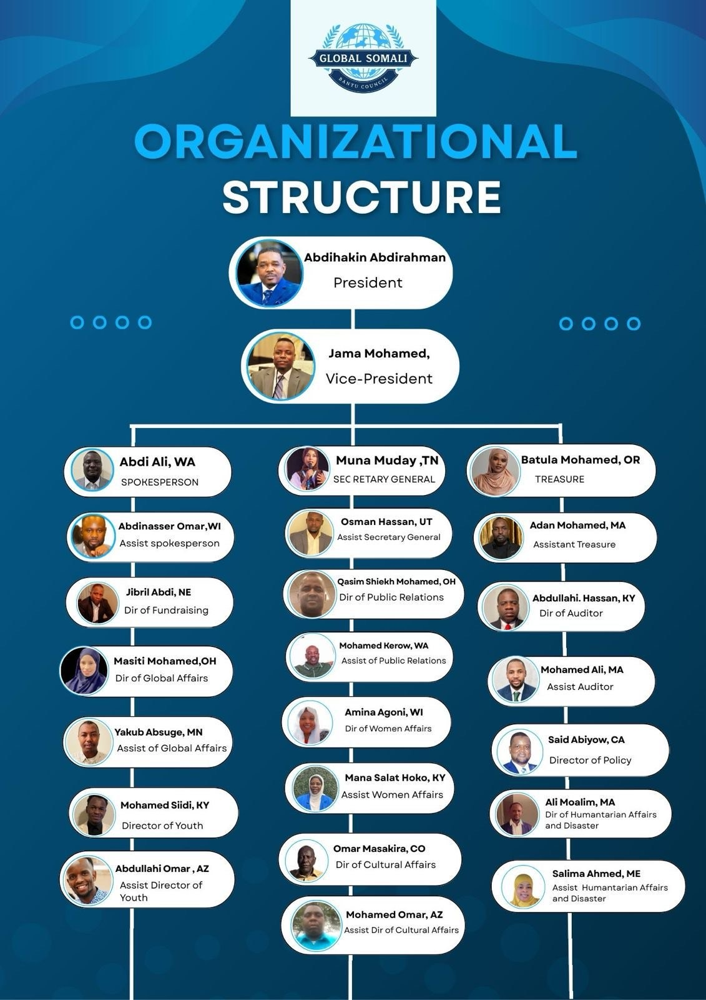

Global Somali Bantu Council (GSBC)
The official umbrella body for Somali Bantu communities worldwide.
GSBC connects Somali Bantu councils, elders, youth, and partners across continents to defend rights, protect identity, and build a better future for our people in Somalia, in refugee camps, and in the diaspora.
Af Maay / Af Soomaali: Golaha Caalamiga ah ee reer Bantu Soomaalida waa hay’adda mideysa hoggaanka, culimada, dhalinyarada iyo haweenka, si loo ilaaliyo karaamada iyo codka bulshada.
Who We Are & Our Story
A non-partisan, community-rooted umbrella council bringing together Somali Bantu leaders from cities, states, and countries around the world.
Who We Are
The Global Somali Bantu Council (GSBC) is a non-partisan, community-rooted umbrella council that brings together Somali Bantu leaders from different cities, states, and countries.
We work with local organizations, mosques, youth groups, and elders’ committees to ensure Somali Bantu voices are respected and represented in every space where decisions are made.
Waxaan uga jeednaa
GSBC waa gole caalami ah oo mideeya hoggaanka reer Bantu Soomaalida. Ujeeddadeennu waa:
- In la mideeyo codka iyo hoggaanka bulshada.
- In la difaaco xuquuqda, karaamada, iyo badqabka bulshada meel kasta oo ay joogaan.
- In dhalinyarada iyo haweenka loo abuuro fursado hoggaamineed iyo waxbarasho.
- In la ilaaliyo luqadda, dhaqanka, iyo taariikhda reer Bantu.
Our Story
Somali Bantu communities have a long history of resilience in the face of discrimination, conflict, and displacement. From the river valleys of southern Somalia to refugee camps in Kenya and resettlement cities around the world, our people have protected their culture, language, and faith.
GSBC was created when community leaders and activists recognized the need for a united global platform to speak with one voice, coordinate efforts, and support each other across borders.
Our Direction
GSBC is guided by a clear mission and a hopeful vision rooted in our culture, faith, and shared struggle for justice and dignity.
Our Mission
To unite Somali Bantu communities globally, advocate for their rights, and build sustainable pathways to education, economic opportunity, and meaningful participation in every society where we live.
Our Vision
A world where Somali Bantu people live in safety and prosperity, proudly visible, fully recognized as equal citizens or residents, while preserving their culture, language, and identity.
Core Values
Programs & Departments
GSBC organizes its work through key departments that respond to real needs identified by communities in Somalia, refugee camps, and the diaspora.
Education & Youth
Education & Youth Leadership
Supporting students and young leaders through mentorship, community schools, and connections to scholarships and vocational training.
- Youth leadership trainings and conferences.
- Support for school enrollment, translation, and interpretation.
- Partnerships with schools, colleges, and training centers.
Rights & Policy
Human Rights & Advocacy
Documenting and raising concerns around discrimination, statelessness, and protection; engaging with local and international institutions.
- Community consultations and listening sessions.
- Statements, letters, and policy engagement.
- Referrals to trusted legal and human rights partners.
Livelihoods
Economic Empowerment & Development
Supporting families through small business initiatives, savings groups, and employment connections to build long-term stability.
- Entrepreneurship and skills-training workshops.
- Support for cooperatives and community projects.
- Partnerships with NGOs and employers.
Culture & Identity
Cultural Preservation & Community Life
Celebrating Somali Bantu culture through language, music, oral history, and storytelling that connects elders and youth.
- Cultural festivals and heritage days.
- Documentation of Maay and other languages, songs, and stories.
- Programs that connect elders with youth and children.
Key Departments
GSBC’s institutional work runs through:
- Office of the President & Vice-President
- Secretariat / Office of the Secretary General
- Spokesperson & Public Relations Department
- Women’s Affairs & Gender Justice
- Youth & Sports Department
- Humanitarian Affairs & Disaster Response
- Finance, Fundraising & Development
- Policy, Research & Documentation
Council & Executive Leadership
The founding leadership team is composed of a President, Vice-President, Secretariat, and specialized directors working across multiple U.S. states and communities.
Top Leadership: President Abdihakin Abdirahman and Vice-President Jama Mohamed provide overall guidance and represent GSBC in national and international forums.
Visual Organizational Structure
The official organizational chart of the Global Somali Bantu Council is shown below. This visual structure can be updated as new departments and regional representatives are added.

Global Presence & Chapters
GSBC works through local councils, community-based organizations, and mosque committees in different regions of the world.
Africa
- Southern & Central Somalia riverine communities.
- Refugee camps in Kenya and neighboring countries.
- Emerging community structures inside Somalia.
North America
- United States: WA, MN, WI, KY, AZ, MA, OH, CO, NE, OR, CA, ME and more.
- Canada: Growing community networks and youth groups.
Europe & Beyond
- Emerging councils in European cities.
- Partners and allies working with Somali Bantu refugees.
If you represent a Somali Bantu organization, youth group, or council and would like to become an official chapter under GSBC, please contact the Secretariat using the form below.
Take Part in the Work
Somali Bantu progress is a shared responsibility. Whether you are a community member, ally, religious leader, or partner organization, there is a place for you in this work.
Become a Member, Volunteer, or Partner
If you represent a community organization, council, mosque, youth or women’s group, you are invited to connect with GSBC and join the global network.
Contact the Secretariat to:
- Register your local Somali Bantu council or CBO as a chapter.
- Volunteer skills in translation, legal support, education, media, or organizing.
- Partner with GSBC on humanitarian or development projects.
- Support programs through in-kind contributions or funding.
Our Shared Responsibility
GSBC believes that every Somali Bantu community, ally, and partner has a role in building safer, stronger, and more connected futures for our people.
Through coordination, advocacy, and partnership, we seek to bring together scattered efforts into a united movement grounded in dignity and mutual support.
Contact & Secretariat
Use the form or contact details below to reach the Global Somali Bantu Council. This information reflects the current main office and can be updated as needed.
Send a message
Secretariat – Main Office
Global Somali Bantu Council (GSBC)
Main Office – Columbus, Ohio, USA
Email: globalsomalibantucouncil@gmail.com
Phone / WhatsApp: +1 (414) 629-1963
For official letters, partnership proposals, and media inquiries, please include your full name, organization, and contact details. Messages will be directed to the appropriate member of the leadership team.